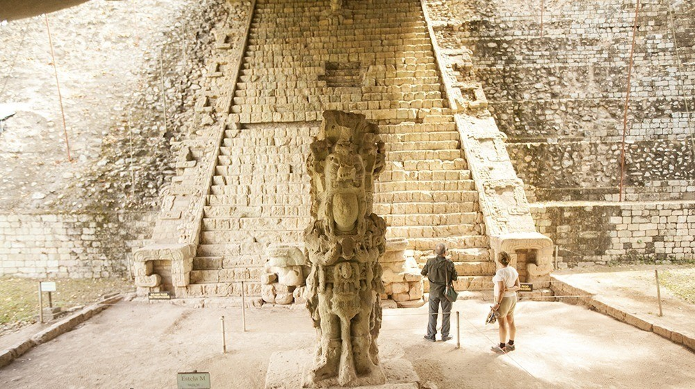
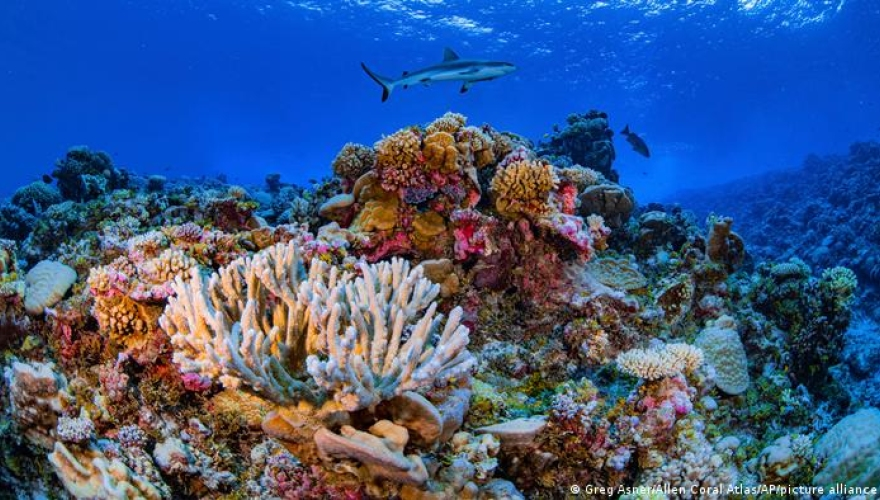
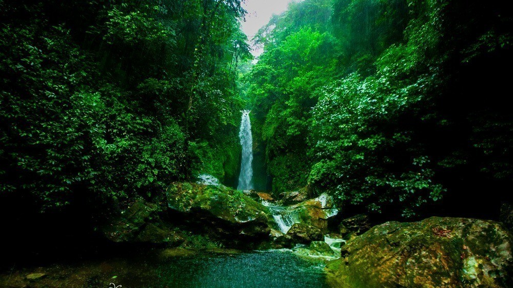

Joya de la civilización maya, con templos, estelas y la famosa Escalinata de los Jeroglíficos.
Tierra de historia, selva y mar. Descubre el corazón de Centroamé rica
Los hondureños celebramos el Feriado Morazánico, una fecha para recordar el ideal de Francisco Morazán y para conocer el patrimonio histórico, natural y cultural de nuestro país.

Joya de la civilización maya, con templos, estelas y la famosa Escalinata de los Jeroglíficos.

Aguas cristalinas del Caribe, ideales para el buceo, el snorkel y el descanso frente al mar.

Bosque tropical húmedo con ríos, cascadas y gran variedad de aves y vida silvestre.
| Aspecto | Descripción |
|---|---|
| Ubicación geográfica | América Central, con costas en el Mar Caribe y en el Océano Pacífico. Limita con Guatemala, El Salvador y Nicaragua. |
| Capital | Tegucigalpa |
| Moneda | Lempira (HNL) |
| Clima | Tropical, más fresco en las zonas montañosas del interior. |
| Biodiversidad | Bosques nublados, selvas húmedas y arrecifes de coral; hogar de la guacamaya roja, ave nacional. |
| Información de carácter general para fines turísticos. | |